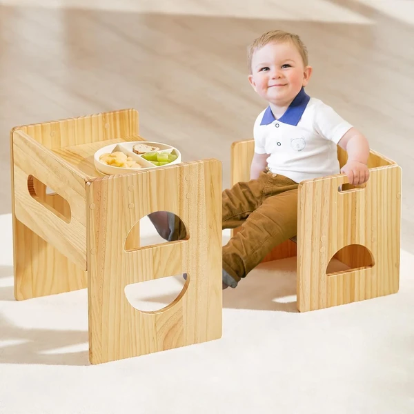
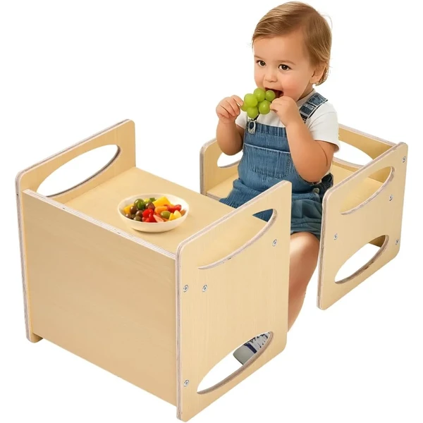
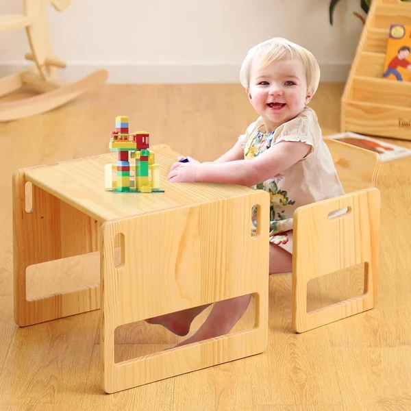
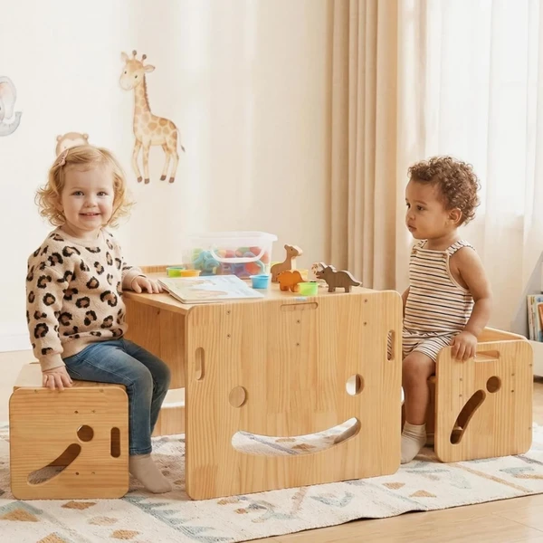
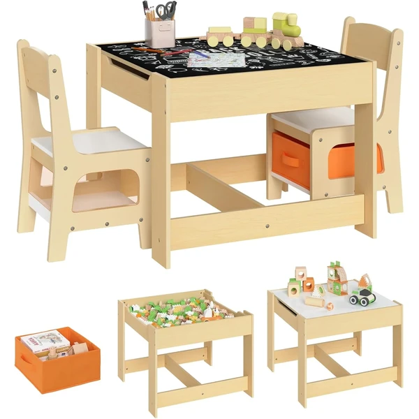
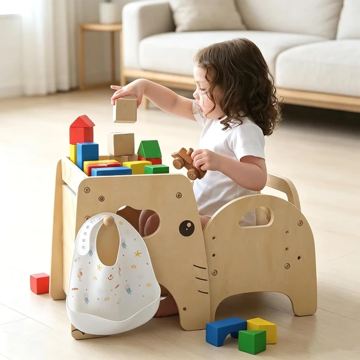
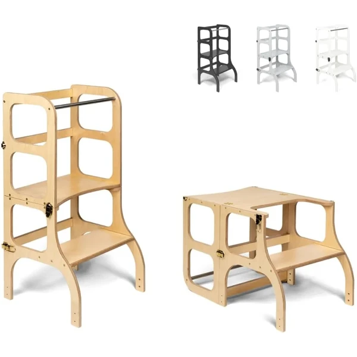
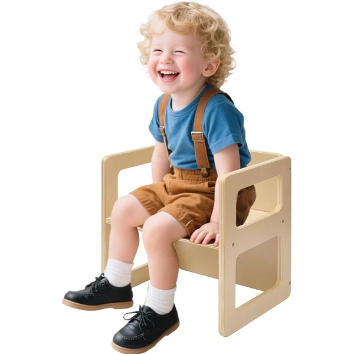

Mesa y silla Montessori FUNLIO ajustable
Set de mesa y silla Montessori de madera de pino, ajustable en dos niveles de altura para acompañar al niño de 1 a 3 años. Incluye asas pensadas para que el propio niño pueda moverlas.
⭐ ¿Por qué nos gusta?
- ✔ Ajustable en dos niveles de altura.
- ✔ Asas para que el niño la mueva por sí mismo.
- ✔ Madera de pino de calidad.
💬 Lo que más destacan las familias
Las familias destacan que las asas hagan que el niño pueda mover el mueble solo, sin depender de un adulto.
Ver en Amazon

Mesa y silla de destete VEVOR
Set de mesa y silla Montessori pensado para el destete, con conversión fácil de mesa a silla y ajuste de altura en dos niveles. También puede usarse como reposapiés.
⭐ ¿Por qué nos gusta?
- ✔ Se convierte fácilmente de mesa a silla.
- ✔ Ajuste de altura en dos niveles.
- ✔ Uso adicional como reposapiés.
💬 Lo que más destacan las familias
Se valora la versatilidad de poder usarla como mesa, silla o reposapiés según el momento.
Ver en Amazon

Mesa y silla Montessori FUNLIO
Set de una mesa y una silla Montessori de madera de pino para niños de 1 a 3 años, con asideros pensados para que el niño lo mueva por sí mismo y altura ajustable en dos niveles.
⭐ ¿Por qué nos gusta?
- ✔ Altura ajustable en dos niveles.
- ✔ Asideros pensados para el niño.
- ✔ Madera de pino de calidad.
💬 Lo que más destacan las familias
Es uno de los sets más comentados por la relación calidad-precio y por lo resistente que resulta la madera.
Ver en Amazon

Mesa con dos sillas Montessori FUNLIO
Set de una mesa y dos sillas Montessori de madera de pino para niños de 1 a 3 años, con diseño ahorra-espacio y altura ajustable. Ideal para que dos niños compartan mesa.
⭐ ¿Por qué nos gusta?
- ✔ Incluye dos sillas para compartir mesa.
- ✔ Diseño ahorra-espacio.
- ✔ Altura ajustable en dos niveles.
💬 Lo que más destacan las familias
Las familias destacan que venga con dos sillas, ideal para hermanos o para que jueguen varios niños a la vez.
Ver en Amazon

Set mesa y 2 sillas WOLTU con almacenaje
Grupo de mesa y dos sillas con un tablero de doble cara y espacio de almacenaje bajo la mesa con dos cajas de tela. Fabricado en MDF resistente, pensado para actividades y manualidades.
⭐ ¿Por qué nos gusta?
- ✔ Tablero de doble cara para más usos.
- ✔ Espacio de almacenaje con cajas de tela.
- ✔ Estructura robusta en MDF.
💬 Lo que más destacan las familias
Se valora tener espacio de almacenaje incluido, algo que no todos los sets de mesa y sillas ofrecen.
Ver en Amazon

Mesa y silla de destete Lehoo Castle
Set de mesa y silla Montessori de destete para niños de 1 a 3 años, con diseño multifuncional que crece con la altura ajustable. Fabricada en madera certificada de alta calidad.
⭐ ¿Por qué nos gusta?
- ✔ Diseño multifuncional que crece con el niño.
- ✔ Madera certificada de alta calidad.
- ✔ Perfil compacto, ahorra espacio.
💬 Lo que más destacan las familias
Se valora el diseño compacto y elegante, que además de práctico resulta discreto en cualquier habitación.
Ver en Amazon

Torre convertible en mesa STEP'n'SIT
Mueble Montessori multifuncional que se transforma de torre de aprendizaje a mesa con silla, pensado para niños a partir de los 18 meses. Ayuda a practicar habilidades cotidianas como lavarse las manos o cortar verduras con seguridad.
⭐ ¿Por qué nos gusta?
- ✔ Se transforma de torre a mesa y silla.
- ✔ Pensado desde los 18 meses.
- ✔ Favorece habilidades prácticas de la vida diaria.
💬 Lo que más destacan las familias
Es uno de los muebles más comentados por lo bien que aprovecha el mismo espacio para dos funciones distintas.
Ver en Amazon

Silla Montessori FUNLIO 3 niveles
Silla Montessori individual de madera de pino, ajustable en tres niveles de altura para acompañar al niño de 1 a 3 años. Diseño ligero con un lateral hueco que facilita agarrarla y moverla.
⭐ ¿Por qué nos gusta?
- ✔ Ajustable en tres niveles de altura.
- ✔ Diseño ligero, fácil de mover.
- ✔ Madera de pino de calidad.
💬 Lo que más destacan las familias
Las familias destacan que sea más ligera que otras sillas Montessori y que los tres niveles de ajuste den más margen de uso.
Ver en Amazon